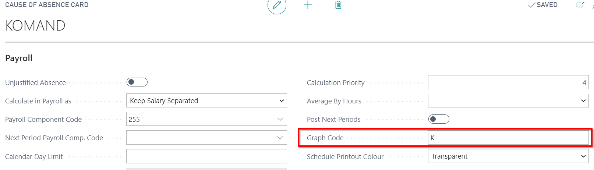

Business Trips
In order to keep a salary for the employee on a business trip absence, act as follows:
Open business trip absence card with reason code KOMAND. Available at LV Payroll Role Center - Absences - Causes of Absence
In tab Payroll and in field Calculate in Payroll as select – Keep Salary Separated (The salary for business trip days will be calculated in another payroll component) or Keep Salary (Then the calculated salary for business trip days will be calculated on the basic salary component);
If the type of the salary calculation is stated Keep Salary Separated, then in field Payroll Component Code should be indicated the payroll component, in what to calculate the salary for the business days;
Should be placed a mark in the field Include in Actual Worktime;
In the additional salary payroll component card must be completed the Setup tab
In cases where the business trip continues from one month to the next, it is recommended to split the business trip and create two employee absence cards. For example, if the business trip is at the period from 25.02.2020. to 05.03.2020., then split it in two separate absence card, like it's shown below:
 and
and

This will ensure correct business trip day calculation in cases when there is a different number of working days in the months of business trip (If the salary is calculated in proportion to the days worked). If the all business trip money is needed to pay together (without waiting the next month's salary) then it is recommended to use a Prepayment (Role Center - + Prepayment List)
- Employee business trip absence records will be reflected in the Accounting table with the code, what is stated in field Graph Code at the Cause of Absence Card's tab Payroll.
